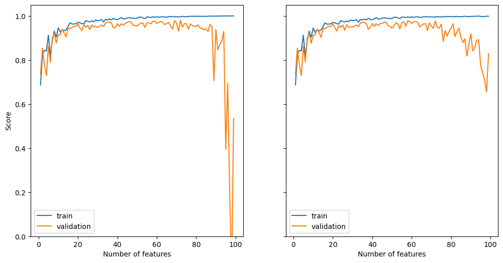

from linreg import LinearRegression # your source code
from matplotlib import pyplot as plt
import numpy as np
import pandas as pdLinear Regression
In this blog post I have implemented least-squares linear regression, which is linear regression using a least-squares cost function. Minimizing the least squares cost function actually has an analytical solution, which I have implemented in addition to gradient descent.
def draw_line(w, x_min, x_max, *, color="black", ax=None, alpha=1, **kwargs):
x = np.linspace(x_min, x_max, 101)
if len(w) == 3:
y = -(w[0]*x + w[2])/w[1]
elif len(w) == 2:
y = w[0]*x + w[1]
if ax is None:
plt.plot(x, y, color = color, alpha=alpha, **kwargs)
else:
ax.plot(x, y, color = color, alpha=alpha, **kwargs)def pad(X):
return np.append(X, np.ones((X.shape[0], 1)), 1)
def LR_data(n_train = 100, n_val = 100, p_features = 1, noise = .1, w = None):
if w is None:
w = np.random.rand(p_features + 1) + .2
X_train = np.random.rand(n_train, p_features)
y_train = pad(X_train)@w + noise*np.random.randn(n_train)
X_val = np.random.rand(n_val, p_features)
y_val = pad(X_val)@w + noise*np.random.randn(n_val)
return X_train, y_train, X_val, y_valn_train = 100
n_val = 100
p_features = 1
noise = 0.2
# create some data
X_train, y_train, X_val, y_val = LR_data(n_train, n_val, p_features, noise)
# train
LR_analytical = LinearRegression()
LR_analytical.fit_analytical(X_train, y_train)
LR_gradient = LinearRegression()
LR_gradient.fit_gradient(X_train, y_train, w=[.5, .5], max_steps=100, alpha=.005)
# plot best fit lines
fig, axarr = plt.subplots(1, 2, figsize=(8, 4))
axarr[0].scatter(X_train, y_train, color="gray", alpha=.5, label="Train", s=15)
axarr[0].scatter(X_val, y_val, color="black", alpha=1, label="Validation", s=20)
labs = axarr[0].set(title = "Training", xlabel = "x", ylabel = "y")
labs = axarr[1].set(title = "Validation", xlabel = "x")
draw_line(LR_analytical.w, 0, 1, color="blue", ax=axarr[0], label="Analytical", lw="2")
draw_line(LR_gradient.w, 0, 1, color="red", ax=axarr[0], label="Gradient", linestyle="dotted", lw="4")
axarr[0].legend()
# plot score
axarr[1].plot(LR_gradient.score_history)
labels = axarr[1].set(xlabel = "Iteration", ylabel = "Score", title = "Score Through Training")
axarr[1].set_ylim([0, 1])
plt.tight_layout()
print("\nAnalytical method:")
print(f"Training score = {LR_gradient.score(X_train, y_train).round(4)}")
print(f"Validation score = {LR_gradient.score(X_val, y_val).round(4)}")
print("\nGradient method:")
print(f"Training score = {LR_gradient.score(X_train, y_train).round(4)}")
print(f"Validation score = {LR_gradient.score(X_val, y_val).round(4)}")
Analytical method:
Training score = 0.4919
Validation score = 0.4647
Gradient method:
Training score = 0.4919
Validation score = 0.4647Experiments
Experiments 1 and 2: Many Features and LASSO Regularization
In this experiment we will increase the number of features up to n - 1 in order to study what happens to the training and validation scores.
We will also add use a LR model that adds a regularizing term to its loss function to fight against overfitting when the number of features is very high.
from sklearn.linear_model import Lasso
n_train = 100
n_val = 100
noise = 0.2
scores = []
scores_lasso = []
for i in range(1, n_train):
p_features = i
X_train, y_train, X_val, y_val = LR_data(n_train, n_val, p_features, noise)
LR = LinearRegression()
LR.fit_analytical(X_train, y_train)
LR_lasso = Lasso(alpha = 0.001)
LR_lasso.fit(X_train, y_train)
scores.append({"train": LR.score(X_train, y_train), "validation": LR.score(X_val, y_val)})
scores_lasso.append({"train": LR_lasso.score(X_train, y_train), "validation": LR_lasso.score(X_val, y_val)})
# plot score
fig, (ax0, ax1) = plt.subplots(1, 2, figsize=(12, 6), sharex=True, sharey=True)
scores_df = pd.DataFrame(scores)
scores_df.index = np.arange(1, len(scores_df) + 1)
scores_df.plot(ax=ax0, xlabel="Number of features", ylabel="Score")
ax0.set_ylim([0, 1.05])
scores_lasso_df = pd.DataFrame(scores_lasso)
scores_lasso_df.index = np.arange(1, len(scores_lasso_df) + 1)
scores_lasso_df.plot(ax=ax1, xlabel="Number of features", ylabel="Score")
print(f"Scores with {n_train} training samples and {n_train-1} features:")
print(f"Training score = {round(scores[-1]['train'], 4)}")
print(f"Validation score = {round(scores[-1]['validation'], 4)}")
print(f"\nScores while using modified loss function with regularization term:")
print(f"Training score = {round(scores_lasso[-1]['train'], 4)}")
print(f"Validation score = {round(scores_lasso[-1]['validation'], 4)}")Scores with 100 training samples and 99 features:
Training score = 1.0
Validation score = 0.5331
Scores while using modified loss function with regularization term:
Training score = 0.9982
Validation score = 0.8288
As we can clearly see, our implementation becomes severely overfit as the number of features approaches the number of training examples. The training score approaches near perfection, whereas the validation score gets worse.
The scikit-learn implementation with the regularization term also exhibits some pretty serious overfitting, but not to the same degree as our implementation. When the number of features is nearly equal to the number of training examples, the regularization term is able to keep the validation score from tanking.